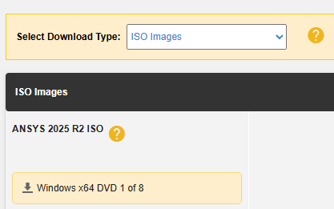
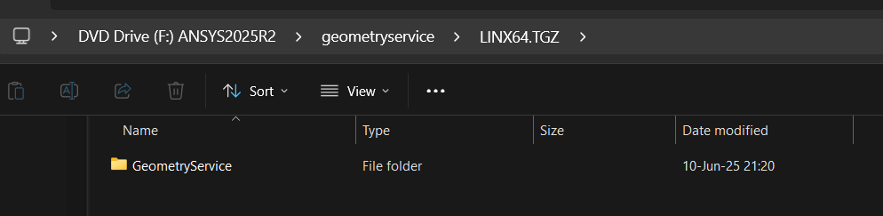
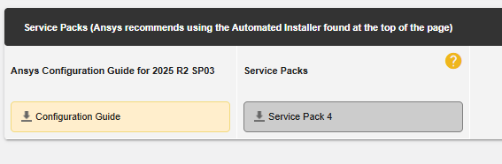
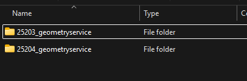

Supported product instance managers#
Overview#
By default, SAF GLOW Engine includes product instance managers for the following products:
| Product | Supported versions | Manager classes | PyAnsys SDK | Secure transport modes |
|---|---|---|---|---|
| AEDT | 2025 R1 SP4 2025 R2 SP4 |
HfssManagerIcepakManagerMaxwell2DManagerMaxwell3DManager
|
pyaedt 1.0.1 |
WNUA, UDS, mTLS, insecure |
| Fluent | 2025 R1 SP4 2025 R2 SP4 |
Fluent3DDPSolverSecureManagerFluent2DDPSolverSecureManagerFluent3DDPMeshingSecureManager
|
ansys-fluent-core 0.37.0 |
WNUA, UDS, mTLS, insecure |
| Geometry | 2025 R1 SP4 2025 R2 SP4 | GeometrySecureManager |
ansys-geometry-core 0.14.2 |
WNUA, UDS, mTLS, insecure |
| MAPDL | 2025 R1 SP4 2025 R2 SP4 | MapdlSecureManager |
ansys-mapdl-core 0.73.0 |
WNUA, UDS, mTLS, insecure |
| Mechanical | 2025 R1 SP4 2025 R2 SP4 | MechanicalSecureManager |
ansys-mechanical-core 0.12.0 |
WNUA, mTLS, insecure |
| optiSLang | 2024 R1 2024 R2 | OptislangManager |
ansys-optislang-core 0.9.4 |
N/A (insecure only) |
| Visor | 0 | VisorManager |
ansys-visor-viewer 0.2.5b0 |
N/A (insecure only) |
Important
gRPC secure transport is available only for product instance managers and configurations that explicitly state secure support (for example, GeometrySecureManager).
Product instance managers that are not explicitly marked as secure STILL BYPASS the requirements when interacting with the product instances, relying on insecure connections affected by the gRPC vulnerabilities recently disclosed by Ansys.
Ansys Electronics Desktop#
HfssManagerIcepakManagerMaxwell2DManagerMaxwell3DManager
To be imported from ansys.saf.product_manager.aedt.
Supported versions#
AEDT versions 2025 R1 SP4 and 2025 R2 SP4.
Known limitations#
Only tested with
pyaedt1.0.1. Using other versions may lead to unexpected behaviors.There should be an environment variable
ANSYSEM_ROOTXXXpointing to the AEDT installation directory.$Env:ANSYSEM_ROOT251="C:\Program Files\ANSYS Inc\v251\AnsysEM" $Env:ANSYSEM_ROOT252="C:\Program Files\ANSYS Inc\v252\AnsysEM"
export ANSYSEM_ROOT251="/ansys_inc/v251/AnsysEM/" export ANSYSEM_ROOT252="/ansys_inc/v252/AnsysEM/"
PyAEDT does not work for solutions that are deployed in a containerized manner.
When connecting to a remote AEDT instance because AEDT is running in another server, PyAEDT requires to have AEDT installed locally in the client side. The license is not required.
To use AEDT with HPS it is required to install the Python package
ansys-saf-product-configuration[aedt]in the HPS scaler environment, and to include in the HPS scaler configuration both AEDT and its wrapper as available applications. For example, adding this snippet to thescaling_config.json:
{
"name": "Ansys Electronics Desktop",
"version": "2025 R2",
"install_path": "/ansys_inc/v252/AnsysEM/",
"executable": "/ansys_inc/v252/AnsysEM/ansysedt",
},
{
"name": "Ansys SAF Product Wrapper [AEDT]",
"version": "2.0",
"install_path": "<path-to-parent-dir-of-python-executable>",
"executable": "<path-to-python-executable>",
}
Note that the executable in the wrapper points to the Python that has the ansys-saf-product-configuration[aedt] package installed in its environment.
Example#
For a complete example using AEDT product managers, see the AEDT solution example.
Fluent#
Fluent3DDPSolverSecureManager: supports secure gRPC connections.Fluent2DDPSolverSecureManager: supports secure gRPC connections.Fluent3DDPMeshingSecureManager: supports secure gRPC connections.Fluent3DDPSolverManager: deprecated, useFluent3DDPSolverSecureManagerinstead.Fluent2DDPSolverManager: deprecated, useFluent2DDPSolverSecureManagerinstead.Fluent3DDPMeshingManager: deprecated, useFluent3DDPMeshingSecureManagerinstead.
To be imported from ansys.saf.product_manager.fluent.
Supported versions#
Fluent versions 2025 R1 SP4 and 2025 R2 SP4.
Known limitations#
Only tested with
ansys-fluent-core0.37.0. Using other versions may lead to unexpected behaviors.When the instance is re-initialized, the internal state of the fluent interpreter is not restored. Only files are restored.
To use Fluent with HPS it is required to install the Python package
ansys-saf-product-configuration[fluent]in the HPS scaler environment, and to include in the HPS scaler configuration both Fluent and its wrapper as available applications. For example, adding this snippet to thescaling_config.json:{ "name": "Ansys Fluent", "version": "2025 R2", "install_path": "/ansys_inc/v252/", "executable": "/ansys_inc/v252/fluent/bin/fluent", }, { "name": "Ansys SAF Product Wrapper [Fluent]", "version": "4.0", "install_path": "<path-to-parent-dir-of-python-executable>", "executable": "<path-to-python-executable>", }
Note that the executable in the wrapper points to the Python that has the
ansys-saf-product-configuration[fluent]package installed in its environment.The secure managers support all gRPC transport modes described in gRPC transport modes. However,
ansys-fluent-coreenforces secure gRPC connections for local instances and does not permit insecure connections. This has two main implications:When using HPS: To use insecure local connections, configure
GLOW_PRODUCT_HOSTwith your local IP address instead of localhost.When using PIM Light Server: The only supported secure mode by PIM Light Server (
WNUA) does not work. Because SAF GLOW Engine cannot reliably know ifWNUAorinsecuremode is being used when using PIM Light Server (see gRPC transport modes), it falls back to insecure connections, whichansys-fluent-corerejects. As a workaround, configureGLOW_PRODUCT_HOSTwith your local IP address instead of localhost to establish a connection.
Example#
For a complete example using Fluent product managers, see the Fluent solution example.
Geometry#
GeometrySecureManager: supports secure gRPC connections.GeometryManager: deprecated, useGeometrySecureManagerinstead.
To be imported from ansys.saf.product_manager.geometry.
Supported versions#
Windows: Geometry versions 2025 R1 SP4 and 2025 R2 SP4.
Linux: Geometry version 2025 R2 SP4.
Configuration#
Install the Geometry service, following the steps proposed in the GitHub issue:
Download only the first ISO image of the Ansys official Release:

Mount it and look in its content for the
geometryservice/WINX64.7zfile on Windows, orgeometryservice/LINX64.TGZon Linux. This compressed file contains theGeometryServicedirectory that we want to install. Extract theWINX64.7zorLINX64.TGZfile, for example into:C:\Program Files\ANSYS Inc\v252\GeometryServiceor/ansys_inc/v252/GeometryService/.
Upgrade to the latest service pack:
In the same page where you downloaded the first ISO image, download the latest service pack ISO image. You can find it at the bottom of the page.

Locate and apply the service pack contents:
Extract the service pack ISO image.
Look for all directories that follow the format
xxxxx_geometryservice. There can be multiple ones if several service packs have been released.

Within each of these directories, locate the
WINX64.7zorLINX64.TGZfile and extract it, overwriting the existingGeometryServicedirectory.If there are multiple service packs, apply them sequentially, starting from the oldest to the newest.
On Linux, make sure the
licensingclientof the binaries has the right permissions:chmod +x /ansys_inc/v252/GeometryService/licensingclient/linx64/ansyscl
Requires configuring the environment variable
GEOMETRY_ROOTXXXto point to theGeometryServicedirectory:$Env:GEOMETRY_ROOT251="C:\Program Files\ANSYS Inc\v251\GeometryService" $Env:GEOMETRY_ROOT252="C:\Program Files\ANSYS Inc\v252\GeometryService"
export GEOMETRY_ROOT252="/ansys_inc/v252/GeometryService/"
This environment variable must be set in the Solution API process, even when HPS and Geometry are running in another environment. The value must be the valid one in the environment where Geometry is expected to run. For example, if Geometry is running on Windows and the Solution is running on Linux, the environment variable in the solution process would be:
C:\Program Files\ANSYS Inc\v251\GeometryServiceRequires configuring the environment variable
ANSYSLMD_LICENSE_FILEto point to a license server in the environment where Geometry is expected to run.export ANSYSLMD_LICENSE_FILE="1055@my-host"`
Requires .NET 8.0 or greater to be installed on the system, and to be added to the
PATHenvironment variable. Using dotnet-install scripts is highly recommended.Requires modifying the HPS scaler configuration to add it as an available application
scaling_config.json:{ "name": "Ansys Geometry", "version": "2025 R1", "install_path": "<path-to-geometry-service-directory>", "executable": "<path-to-geometry-service-directory>/Presentation.ApiServerDMS.exe", }, { "name": "Ansys Geometry", "version": "2025 R2", "install_path": "<path-to-geometry-service-directory>", "executable": "<path-to-geometry-service-directory>/Presentation.ApiServerCoreService.exe", }
{ "name": "Ansys Geometry", "version": "2025 R2", "install_path": "<path-to-parent-dir-of-dotnet-executable>", "executable": "<path-to-dotnet-executable>", }
GeometrySecureManagersupports all gRPC transport modes described in gRPC transport modes.
Known limitations#
Only tested with
ansys-geometry-core0.14.2. Using other versions may lead to unexpected behaviors.
Example#
For a complete example using Geometry product manager, see the Geometry solution example.
MAPDL#
MapdlSecureManager: supports secure gRPC connections.MapdlManager: deprecated, useMapdlSecureManagerinstead.
To be imported from ansys.saf.product_manager.mapdl.
Supported versions#
MAPDL versions 2025 R1 SP4 and 2025 R2 SP4.
Known limitations#
Only tested with
ansys-mapdl-core0.73.0. Using other versions may lead to unexpected behaviors.Each MAPDL client created when interacting with the instance within a transaction spawns a new logger and adds it to the global logger. When the transaction ends, loggers are not cleaned up and keep accumulating. Hence, messages are duplicated except in the GLOW logger where they only appear once.
MAPDL 2025 R1 SP4 and 2025 R2 SP4 are incompatible with the Database module of
ansys-mapdl-core0.72.0.MAPDL spawns a console window in the background when used in Windows.
Concurrent instances of MAPDL in Windows are only supported using HPS.
The secure manager supports all gRPC transport modes described in gRPC transport modes.
Example#
For a complete example using MAPDL product manager, see the MAPDL solution example.
Mechanical#
MechanicalSecureManager: supports secure gRPC connections.MechanicalManager: deprecated, useMechanicalSecureManagerinstead.
To be imported from ansys.saf.product_manager.mechanical.
Supported versions#
Mechanical versions 2025 R1 SP4 and 2025 R2 SP4.
Known limitations#
Only tested with
ansys-mechanical-core0.12.0. Using other versions may lead to unexpected behaviors.When the instance is re-initialized, the internal state of the mechanical interpreter is not restored. Only files are restored.
HPS does not provide an official application finder. It requires a custom configuration to recognize Mechanical as an available application. For example, adding this snippet to the
scaling_config.json:The secure manager supports all gRPC transport modes described in gRPC transport modes, except
UDS. This means that for Linux, the only working secure mode ismTLS.
{
"name": "Ansys Mechanical",
"version": "2025 R1",
"install_path": "/ansys_inc/v251/aisol/",
"executable": "/ansys_inc/v251/aisol/.workbench"
}
Example#
For a complete example using Mechanical product manager, see the Mechanical solution example.
optiSLang#
OptislangManager
To be imported from ansys.saf.product_manager.optislang.
Supported versions#
optiSLang versions 2024 R1 and 2024 R2.
Known limitations#
Only tested with
ansys-optislang-core0.9.4. Using other versions may lead to unexpected behaviors.For 2024 R1, it is not possible to import a project properties file. This should be fixed in 2024 R2.
It’s recommended to use the same Python version as the one included in the optiSLang installation. Example: Python 3.11 for 2024 R1.
Example#
For a complete example using optiSLang product manager, see the optiSLang solution example.
Visor#
VisorManager
To be imported from ansys.saf.product_manager.visor.
Supported versions#
Due to Visor’s different nature than other flagship products and since it’s still in development, SAF GLOW Engine has 0 as the only supported version. This is meant to cover
ansys-visor-viewer = ">=0.2.5b0, <1.0".
Known limitations#
Only tested with
ansys-visor-viewer0.2.5b0. Using other versions may lead to unexpected behaviors.HPS does not provide an official application finder. It requires a custom configuration to recognize Visor as an available application. For example, adding this snippet to the
scaling_config.json:
{
"name": "Visor Viewer",
"version": "0",
"install_path": "<path-to-parent-dir-of-python-executable>",
"executable": "<path-to-python-executable>",
}
Note that the executable points to the Python that has the ansys-visor-viewer package installed in its environment.
How to use in your solution definition#
See Usage.
How to extend for more products#
For more information, see Create custom product managers and configurations.